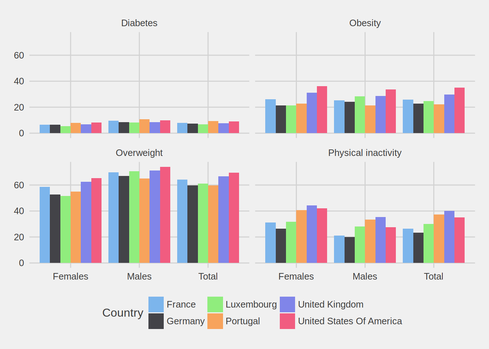

Getting data from pdfs using the pdftools package
June 10, 2018It is often the case that data is trapped inside pdfs, but thankfully there are ways to extract
it from the pdfs. A very nice package for this task is
pdftools (Github link)
and this blog post will describe some basic functionality from that package.
First, let’s find some pdfs that contain interesting data. For this post, I’m using the diabetes country profiles from the World Health Organization. You can find them here. If you open one of these pdfs, you are going to see this:

I’m interested in this table here in the middle:

I want to get the data from different countries, put it all into a nice data frame and make a simple plot.
Let’s first start by loading the needed packages:
library("pdftools")
library("glue")
library("tidyverse")## ── Attaching packages ────────────────────────────────────────────────────────────────────────────── tidyverse 1.2.1 ──## ✔ ggplot2 2.2.1 ✔ purrr 0.2.5
## ✔ tibble 1.4.2 ✔ dplyr 0.7.5
## ✔ tidyr 0.8.1 ✔ stringr 1.3.1
## ✔ readr 1.1.1 ✔ forcats 0.3.0## ── Conflicts ───────────────────────────────────────────────────────────────────────────────── tidyverse_conflicts() ──
## ✖ dplyr::collapse() masks glue::collapse()
## ✖ dplyr::filter() masks stats::filter()
## ✖ dplyr::lag() masks stats::lag()library("ggthemes")
country <- c("lux", "fra", "deu", "usa", "prt", "gbr")
url <- "http://www.who.int/diabetes/country-profiles/{country}_en.pdf?ua=1"The first 4 lines load the needed packages for this exercise: pdftools is the package that I
described in the beginning of the post, glue is optional but offers a nice alternative to the
paste() and paste0() functions. Take a closer look at the url: you’ll see that I wrote {country}.
This is not in the original links; the original links look like this (for example for the USA):
"http://www.who.int/diabetes/country-profiles/usa_en.pdf?ua=1"So because I’m interested in several countries, I created a vector with the country codes
of the countries I’m interested in. Now, using the glue() function, something magical happens:
(urls <- glue(url))## http://www.who.int/diabetes/country-profiles/lux_en.pdf?ua=1
## http://www.who.int/diabetes/country-profiles/fra_en.pdf?ua=1
## http://www.who.int/diabetes/country-profiles/deu_en.pdf?ua=1
## http://www.who.int/diabetes/country-profiles/usa_en.pdf?ua=1
## http://www.who.int/diabetes/country-profiles/prt_en.pdf?ua=1
## http://www.who.int/diabetes/country-profiles/gbr_en.pdf?ua=1This created a vector with all the links where {country} is replaced by each of the codes
contained in the variable country.
I use the same trick to create the names of the pdfs that I will download:
pdf_names <- glue("report_{country}.pdf")And now I can download them:
walk2(urls, pdf_names, download.file, mode = "wb")walk2() is a function from the purrr package that is similar to map2(). You could use map2()
for this, but walk2() is cleaner here, because dowload.file() is a function with a so-called
side effect; it downloads files. map2() is used for functions without side effects.
Now, I can finally use the pdf_text() function from the pdftools function to get the text
from the pdfs:
raw_text <- map(pdf_names, pdf_text)raw_text is a list of where each element is the text from one of the pdfs. Let’s take a look:
str(raw_text)## List of 6
## $ : chr "Luxembourg "| __truncated__
## $ : chr "France "| __truncated__
## $ : chr "Germany "| __truncated__
## $ : chr "United States Of America "| __truncated__
## $ : chr "Portugal "| __truncated__
## $ : chr "United Kingdom "| __truncated__Let’s take a look at one of these elements, which is nothing but a very long character:
raw_text[[1]]## [1] "Luxembourg Total population: 567 000\n Income group: High\nMortality\nNumber of diabetes deaths Number of deaths attributable to high blood glucose\n males females males females\nages 30–69 <100 <100 ages 30–69 <100 <100\nages 70+ <100 <100 ages 70+ <100 <100\nProportional mortality (% of total deaths, all ages) Trends in age-standardized prevalence of diabetes\n Communicable,\n maternal, perinatal Injuries 35%\n and nutritional 6% Cardiovascular\n conditions diseases\n 6% 33%\n 30%\n 25%\n % of population\n Other NCDs\n 16% 20%\n No data available 15% No data available\n Diabetes 10%\n 2%\n 5%\n Respiratory\n diseases\n 6% 0%\n Cancers\n 31%\n males females\nPrevalence of diabetes and related risk factors\n males females total\nDiabetes 8.3% 5.3% 6.8%\nOverweight 70.7% 51.5% 61.0%\nObesity 28.3% 21.3% 24.8%\nPhysical inactivity 28.2% 31.7% 30.0%\nNational response to diabetes\nPolicies, guidelines and monitoring\nOperational policy/strategy/action plan for diabetes ND\nOperational policy/strategy/action plan to reduce overweight and obesity ND\nOperational policy/strategy/action plan to reduce physical inactivity ND\nEvidence-based national diabetes guidelines/protocols/standards ND\nStandard criteria for referral of patients from primary care to higher level of care ND\nDiabetes registry ND\nRecent national risk factor survey in which blood glucose was measured ND\nAvailability of medicines, basic technologies and procedures in the public health sector\nMedicines in primary care facilities Basic technologies in primary care facilities\nInsulin ND Blood glucose measurement ND\nMetformin ND Oral glucose tolerance test ND\nSulphonylurea ND HbA1c test ND\nProcedures Dilated fundus examination ND\nRetinal photocoagulation ND Foot vibration perception by tuning fork ND\nRenal replacement therapy by dialysis ND Foot vascular status by Doppler ND\nRenal replacement therapy by transplantation ND Urine strips for glucose and ketone measurement ND\nND = country did not respond to country capacity survey\n〇 = not generally available ● = generally available\nWorld Health Organization – Diabetes country profiles, 2016.\n"As you can see, this is a very long character string with some line breaks (the "\n" character).
So first, we need to split this string into a character vector by the "\n" character. Also, it might
be difficult to see, but the table starts at the line with the following string:
"Prevalence of diabetes" and ends with "National response to diabetes". Also, we need to get
the name of the country from the text and add it as a column. As you can see, a whole lot
of operations are needed, so what I do is put all these operations into a function that I will apply
to each element of raw_text:
clean_table <- function(table){
table <- str_split(table, "\n", simplify = TRUE)
country_name <- table[1, 1] %>%
stringr::str_squish() %>%
stringr::str_extract(".+?(?=\\sTotal)")
table_start <- stringr::str_which(table, "Prevalence of diabetes")
table_end <- stringr::str_which(table, "National response to diabetes")
table <- table[1, (table_start +1 ):(table_end - 1)]
table <- str_replace_all(table, "\\s{2,}", "|")
text_con <- textConnection(table)
data_table <- read.csv(text_con, sep = "|")
colnames(data_table) <- c("Condition", "Males", "Females", "Total")
dplyr::mutate(data_table, Country = country_name)
}I advise you to go through all these operations and understand what each does. However, I will describe some of the lines, such as this one:
stringr::str_extract(".+?(?=\\sTotal)")This uses a very bizarre looking regular expression: ".+?(?=\\sTotal)". This extracts everything
before a space, followed by the string "Total". This is because the first line, the one that contains
the name of the country looks like this: "Luxembourg Total population: 567 000\n". So everything
before a space followed by the word "Total" is the country name. Then there’s these lines:
table <- str_replace_all(table, "\\s{2,}", "|")
text_con <- textConnection(table)
data_table <- read.csv(text_con, sep = "|")The first lines replaces 2 spaces or more (“\\s{2,}”) with "|". The reason I do this is because
then I can read the table back into R as a data frame by specifying the separator as the “|” character.
On the second line, I define table as a text connection, that I can then read back into R using
read.csv(). On the second to the last line I change the column names and then I add a column
called "Country" to the data frame.
Now, I can map this useful function to the list of raw text extracted from the pdfs:
diabetes <- map_df(raw_text, clean_table) %>%
gather(Sex, Share, Males, Females, Total) %>%
mutate(Share = as.numeric(str_extract(Share, "\\d{1,}\\.\\d{1,}")))I reshape the data with the gather() function (see what the data looks like before and after
reshaping). I then convert the "Share" column into a numeric (it goes from something that looks
like "12.3 %" into 12.3) and then I can create a nice plot. But first let’s take a look at
the data:
diabetes## Condition Country Sex Share
## 1 Diabetes Luxembourg Males 8.3
## 2 Overweight Luxembourg Males 70.7
## 3 Obesity Luxembourg Males 28.3
## 4 Physical inactivity Luxembourg Males 28.2
## 5 Diabetes France Males 9.5
## 6 Overweight France Males 69.9
## 7 Obesity France Males 25.3
## 8 Physical inactivity France Males 21.2
## 9 Diabetes Germany Males 8.4
## 10 Overweight Germany Males 67.0
## 11 Obesity Germany Males 24.1
## 12 Physical inactivity Germany Males 20.1
## 13 Diabetes United States Of America Males 9.8
## 14 Overweight United States Of America Males 74.1
## 15 Obesity United States Of America Males 33.7
## 16 Physical inactivity United States Of America Males 27.6
## 17 Diabetes Portugal Males 10.7
## 18 Overweight Portugal Males 65.0
## 19 Obesity Portugal Males 21.4
## 20 Physical inactivity Portugal Males 33.5
## 21 Diabetes United Kingdom Males 8.4
## 22 Overweight United Kingdom Males 71.1
## 23 Obesity United Kingdom Males 28.5
## 24 Physical inactivity United Kingdom Males 35.4
## 25 Diabetes Luxembourg Females 5.3
## 26 Overweight Luxembourg Females 51.5
## 27 Obesity Luxembourg Females 21.3
## 28 Physical inactivity Luxembourg Females 31.7
## 29 Diabetes France Females 6.6
## 30 Overweight France Females 58.6
## 31 Obesity France Females 26.1
## 32 Physical inactivity France Females 31.2
## 33 Diabetes Germany Females 6.4
## 34 Overweight Germany Females 52.7
## 35 Obesity Germany Females 21.4
## 36 Physical inactivity Germany Females 26.5
## 37 Diabetes United States Of America Females 8.3
## 38 Overweight United States Of America Females 65.3
## 39 Obesity United States Of America Females 36.3
## 40 Physical inactivity United States Of America Females 42.1
## 41 Diabetes Portugal Females 7.8
## 42 Overweight Portugal Females 55.0
## 43 Obesity Portugal Females 22.8
## 44 Physical inactivity Portugal Females 40.8
## 45 Diabetes United Kingdom Females 6.9
## 46 Overweight United Kingdom Females 62.4
## 47 Obesity United Kingdom Females 31.1
## 48 Physical inactivity United Kingdom Females 44.3
## 49 Diabetes Luxembourg Total 6.8
## 50 Overweight Luxembourg Total 61.0
## 51 Obesity Luxembourg Total 24.8
## 52 Physical inactivity Luxembourg Total 30.0
## 53 Diabetes France Total 8.0
## 54 Overweight France Total 64.1
## 55 Obesity France Total 25.7
## 56 Physical inactivity France Total 26.4
## 57 Diabetes Germany Total 7.4
## 58 Overweight Germany Total 59.7
## 59 Obesity Germany Total 22.7
## 60 Physical inactivity Germany Total 23.4
## 61 Diabetes United States Of America Total 9.1
## 62 Overweight United States Of America Total 69.6
## 63 Obesity United States Of America Total 35.0
## 64 Physical inactivity United States Of America Total 35.0
## 65 Diabetes Portugal Total 9.2
## 66 Overweight Portugal Total 59.8
## 67 Obesity Portugal Total 22.1
## 68 Physical inactivity Portugal Total 37.3
## 69 Diabetes United Kingdom Total 7.7
## 70 Overweight United Kingdom Total 66.7
## 71 Obesity United Kingdom Total 29.8
## 72 Physical inactivity United Kingdom Total 40.0Now let’s go for the plot:
ggplot(diabetes) + theme_fivethirtyeight() + scale_fill_hc() +
geom_bar(aes(y = Share, x = Sex, fill = Country),
stat = "identity", position = "dodge") +
facet_wrap(~Condition)
That was a whole lot of work for such a simple plot!
If you found this blog post useful, you might want to follow me on twitter for blog post updates.